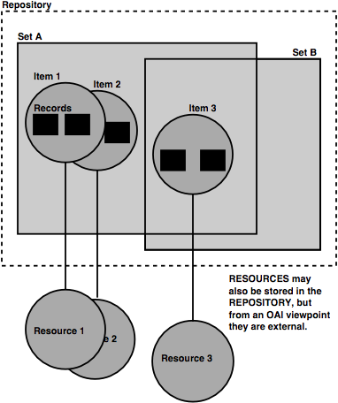

OAI-Rights
White Paper
September 26,
2003
Carl Lagoze
(lagoze@cs.cornell.edu) - Cornell
University Information Science
Herbert Van de
Sompel (herbertv@lanl.gov) - Los Alamos
National Laboratory
Michael Nelson
(mln@cs.odu.edu) - Old Dominion University
Computer Science
SImeon Warner
(simeon@cs.cornell.edu) - Cornell
University Information Science
The Open Archives Initiative Protocol for Metadata
Harvesting (OAI-PMH)
has become an important foundation for interoperability among networked
information systems. It is widely used in a variety of domains including
libraries, museums, government, and research.
Like any vehicle for exchanging information, the OAI-PMH
exists in a context where information holders have concerns about rights to the
use of their information. Although the OAI-PMH is nominally about the exchange
of metadata, this does not lessen the complexities of rights-related issues:
- The distinction between content (data) and metadata is
fuzzy at best, especially vis-à-vis intellectual property, and many providers
are justifiably wary about uncontrolled reuse of rich metadata that represents
a significant intellectual effort.
- Since the only technical restriction on data exchanged
via OAI-PMH is that it must use XML encoding, it is entirely feasible to use
the protocol for transmission of content itself.
- Since the primary reason for making metadata available
via OAI-PMH is usually eventual access to the resource described by the
metadata, guidelines and frameworks for expressing rights to that resource are
in the scope of the protocol.
As a result of these issues, discussion of rights and their
relationship to the OAI-PMH have been frequent throughout work on the protocol.
This paper is intended as a foundation for work aimed at
incorporating structured rights expressions into the OAI-PMH. This work will be
undertaken by a technical group called oai-rights, and will result in a set of
OAI-PMH guidelines scheduled for release in second quarter 2004. A copy of the
letter of invitation to this group is included as Appendix A in this document.
In the tradition of OAI-related work, this effort is tightly scoped and intended
to produce results that are both simple and extensible. As such, two items are
out-of-scope for the oai-rights effort:
- oai-rights will not define any new rights expression
language or semantics. There is a wealth of work in rights expression
languages with buy-in from industry and other organizations. These include
XrML,
ODRL,
and the Creative Commons
initiative.
- oai-rights will avoid restriction to any single rights
expression language. The goal is to permit any type of rights expressions
expressible as XML. We will work on including Creative Commons licenses in
OAI-PMH responses, but only as a proof-of-concept of the general approach.
This paper examines issues and suggests alternatives for
the incorporation of rights expressions in the OAI-PMH along three dimensions:
- Entity association, which covers the association
of rights expression with metadata and data (resources).
- Aggregation association, which covers whether
rights expressions can be associated with entities in the OAI-PMH that group
other entities.
- Binding, which covers where rights expressions
are placed in protocol responses.
Entity association
Experience with the OAI-PMH thus far indicates that the oai-rights
effort should focus on both rights expressions for metadata and associated
resources:
- A significant number of data providers, notably in the
NSDL
context, have expressed concern about uncontrolled reuse of rich metadata.
These organizations and individuals maintain that this metadata represents
considerable intellectual effort to which they would like to associate
statements about copyright and usage restrictions.
- Most metadata currently exposed via OAI-PMH is meant to
facilitate resource discovery. This is both because the required OAI-PMH
metadata format is Dublin Core, a basic resource discovery element set, and
because the foundations of metadata lie in library cataloging where discovery
is a primary goal. The natural progression from discovery is access. Thus,
expression of restrictions on resource access is an understandable concern for
data providers. Furthermore, service providers may wish to present
information about the accessibility of content.
We therefore suggest that oai-rights proceed on the
assumption that the handling of rights expressions for both metadata and
resources will be covered by any specification.
Aggregation association
The OAI-PMH data model includes a number of entities, some
of which aggregate other entities. These entities are listed below, with the
aggregating entities in bold-face, and illustrated in the figure below:
- Repository – A network accessible server
that proccesses OAI-PMH requests and thereby makes metadata harvestable.
- Resource – The object that metadata is “about”.
In some cases, repositories have Resources (and associated metadata) as
their constituents. In others, such as metadata aggregators, the Resource
is separate from the Repository.
- Item – An abstract object that
represents the collection of metadata “about a Resource” that can be
harvested from a Repository via the OAI-PMH.
- Record – XML-encoded metadata in a specific
format returned via an OAI-PMH harvesting request.
- Set – A grouping of Items
for the purpose of selective harvesting. Set membership for
Items is not required – an Item may
be in no Sets – and non-exclusive – an Item
may be in more than one Set.

oai-rights will need to
decide if rights expressions can be associated with the aggregating entities,
independent of whether the expression concerns the content (Resource) or
the metadata (Record). For example, the ability to associate a rights
statement with a Repository might provide a shortcut for expressing that
statement about all Records disseminated via that Repository
and/or all Resources for which those Records are metadata.
Similar semantics might exist for associating rights statements for Items
– applicability for all Records (metadata formats) that are grouped by
that Item – and Sets – applicability for all Items
(disseminating Records) that are aggregated by that Set.
While this may be a convenient shortcut, we foresee a
number of complications in such shortcuts that may make them complicated to
implement:
- The utility of the shortcut for a harvester assumes that
there is some ordering in protocol requests. For example, if a
Repository-wide rights statement were included in an Identify
protocol response (which semantically provides information about the
Repository), a harvester would need to make such a request before any
harvesting of Records (via the OAI-PMH ListRecords or
GetRecord requests). Such pseudo-statefulness is not currently present in
the OAI-PMH and it is probably inadvisable to introduce it. (Of course, a
disseminated Item could specify that Repository-level
rights statements exist and the harvester should make an Identify
request to find them, but this also imposes an additional burden on the
harvester).
- The ability to associate a rights statement with an
aggregating entity will require a set of rules and/or error conditions about
aggregating entity/individual entity combinations. For example, if a rights
statement is associated with a Repository, does this preclude
the association with an Item (it is an error), or should the
Item statement override the Repository statement, or
are they combined (which may be semantically impossible or nonsensical)?
Also, the OAI-PMH data model allows Items to be in multiple
Sets. How can conflicting rights expressions at the Set
level, which are inherited by an Item residing in multiple
Sets, be resolved?
At first glance, therefore, it may make sense for the oai-rights
specification to only allow rights statements associations with the
non-aggregating entities Record and Resource. However, another
solution may be possible.
Binding
Because some metadata formats already have means of
expressing rights statements, for example the rights element
in Dublin Core, oai-rights will need to consider whether to employ these
mechanisms in metadata formats, to restrict the rights statements to some more
specific protocol mechanism, or to allow some mixture of these methods. Two
issues need to be considered to make a decision in this area:
- If the expression of rights statements in OAI-PMH
leverages semantics in existing metadata formats, a harvester will need to
determine which rights statement in which metadata format is the applicable
one. For example, it is entirely feasible that a selected Item
might disseminate multiple metadata Records including multiple and
possibly conflicting rights statements. Is only one applicable? Which one is
applicable? Is some combination applicable, with questions again arising
about difficult or nonsensical semantic combinations? To what extent should
the OAI-PMH enforce rights consistency in records?
- Perhaps one answer to the above question is to endow the
rights element in the required oai_dc metadata format as the blessed method
for expressing rights statements in OAI-PMH. However, there are a number of
problems with this approach:
o
The existing Dublin Core requirement in the OAI-PMH is now under
discussion. The most compelling argument for loosening this requirement is that
Dublin Core semantics (resource discovery) are not appropriate for a variety of
applications of the OAI-PMH that are not oriented towards resource discovery or
“document-like objects”. Perhaps the utility of the DC rights element is a
convincing argument, but this needs to be considered.
o
As described earlier, the resulting specification should allow
expression of rights statements defined by various external efforts such as XrML
and ODRL. Both of these use XML areas their encoding mechanism. However,
qualified and unqualified Dublin Core, qualified and unqualified, currently
restricts element values to text literals and not arbitrary XML sub-structure.
Thus, it would not be appropriate to embed an XrML statement in a DC rights
element.
o
As noted earlier, the oai-rights effort begins with an assumption
that rights statements should apply to Resources and metadata Records.
The semantics of the DC rights element is specifically “a rights management
statement for the resource, or reference a service providing such information.”
Thus, simply exploiting the rights element within the oai_dc metadata format
will not provide a comprehensive solution.
An alternative and somewhat simpler solution to consider is
to define within OAI-PMH two mechanisms:
- An “about” container
that permits packaging of a single rights statement encoded in XML (conforming
to any schema such as XrML) that addresses rights concerns about the
associated metadata Record.
- A designated metadataPrefix, such as oai_rights, that is
a package for including a rights statement about the Resource in XML
(conforming to any schema such as XrML). The schema for such metadataPrefix
might just be enclosing tags, and then allowing sub-tags for any rights
specification language.
While this solution might duplicate some effort by existing
metadata initiatives, such as DCMI, it does present a relatively easy solution
for harvesters.
Conclusions
oai-rights is intended as a relatively short-term (less
than one year) and well-scoped effort to define how rights statements should be
carried in OAI-PMH. As such, the effort needs to follow the spirit of previous
OAI activities; simple solutions that cover a broad class of uses. This paper
has described a number of issues in approaching this problem and, hopefully,
laid the foundation for a solution that reflects this spirit.